Bob Bruninga, PE
IEEE National Committee on Transportation and Aerospace
Maryland EV Infrastructure Council (public commentor)
Electric Vehicle Association of DC
wb4apr at amsat dot org
Let us PAY-in to PLUG-in!:

This is a NO COST - SELF HELP project! . . . . . . . .
For Further background see the page:
EV Charging Everywhere!
For Technical justification, see the
IEEE Paper on L1 Charging.
Download Paper Why the GAO Decision on EV's does not apply
See DOE Policy for
EV Charging and specific
details that does allow employee charging. .
Download a one-page(f/b) handout for
Federal,
State,
City, or
Employers
Download a letter to your
Free,
Paid,
Condo, or
Mall parking garage with existing outlets.
Download the Charging-at-work Presentation given at the DC EV Forum 12/12/11.
Download the EV Position Paper
on Charging Infrastructure (draft).
ISSUE: GAO Decision on EV's is being broadly interpreted to BLOCK the use of EV convenience charging while parked on Federal Installations.
We are asking for the GAO to clarify their Decision 320116 so that Pass&Tag offices at Federal Agencies can "sell" monthly pre-paid EV CHARGING PASSES (similar to temporary handicapped placards shown here) to employees at a cost -equal- to the cost of electricity (typically $20 per month for a 20 mile commute) for daily charging from existing 120v outlets.
Similarly, If you find outlets in your local garage, download one of the letters above and write the owner!
This placard (when PAID) allows the authorized EV owner employee to plug into any convenient 120 VAC outlet on Federal property that is -safely- located within a few feet of an existing -valid- parking spot. No special chargers or installation is required. A few such existing exterior 120 volt standard outlets can usually be found on most facilities everywhere (at least equal to the number of EV's that work there for the next few years!). If not, they should cost little to install. See photo at upper right.
!!! Done This simple clarification of Policy can double the EV range of all employees!!!
If your L1 Outlet trips on your EV: Some home/outdoor GFCI outlets are very old and do not meet the more recent specs that are less sensitive to transients. If your old GFCI outlet trips when you plug in your EV, consider replacing it with a GFCI Designed specifically for EV charging as shown to the upper right. These are readily available from Home Depot on line.
 This NO COST INITIATIVE will accomplish FAR MORE than the $50 Million
government rebates being offered for the installation of expensive
level-2 quick chargers which are not needed at home (8 hours sleeping)
or work (8 hours working) for employees. This 120 volt charging at work
doubles the effective commute range of all EV employees.
Expensive L2 Quick chargers at work are generally idle 83% of the time! (see analysis below)
because cars charge in an hour or so and then sit idle.
Managers do not want employees going to the parking lot every
hour to play musical chairs with their cars to share a few expensive chargers
that can fully replenish an average commuter EV in under 1 hour! . . . Let them
plugin to any 120v outlet the full 8 hours and get the same charge instead.
This NO COST INITIATIVE will accomplish FAR MORE than the $50 Million
government rebates being offered for the installation of expensive
level-2 quick chargers which are not needed at home (8 hours sleeping)
or work (8 hours working) for employees. This 120 volt charging at work
doubles the effective commute range of all EV employees.
Expensive L2 Quick chargers at work are generally idle 83% of the time! (see analysis below)
because cars charge in an hour or so and then sit idle.
Managers do not want employees going to the parking lot every
hour to play musical chairs with their cars to share a few expensive chargers
that can fully replenish an average commuter EV in under 1 hour! . . . Let them
plugin to any 120v outlet the full 8 hours and get the same charge instead.
The Employer/Employee relationship already exists for pay-as-you-go coffee messes, and here the employee's Electric car plugged into a 120v outlet is drawing no more power than a coffee pot. In addition, he/she is even willing to fully pay for the electricity up-front.
The cost for 21 workdays a month of 8 hours of electricity from any standard 120 volt 15 amp circuit to make up for an incoming commute is shown in the figure below right. Fully 50% of all commuters would use less than 54 cents a day while charging at work. And 2 out of every 3 use less than 81 cents. Employees may purchase monthly charging passes based on their home-of-record distance to work. The Federal/state/city/employer electricity usually costs less than that, so $10 to $20/month should more than cover the electricity used and cost of the placards. Maybe $5/mo for an electric Motorcycle and maybe $2/Mo for an electric bike. Longer commutes could pay more.
 Power drawn is Self-Limiting. This arrangement cannot be abused since an EV
simply cannot draw more than about $1.80 a day from a 120 volt 15 amp outlet
during an 8 hour day. Any more current and the 15 amp breaker will trip.
If one tries to stay plugged in for say 16 or 24 hours to
draw more government/company electricity than he has pre-paid, he runs up against
the problem of a full battery! Once his car's battery is fully charged
(which for 2/3rds of all EV's is under 4 hours) then no more power can be
drawn from the outlet! Assuming the EV owner always charges up at home the night before,
then the charge time at work on a 120v outlet is directly proportional to his one-way
distance to work as shown in the next graphic to the right.
Power drawn is Self-Limiting. This arrangement cannot be abused since an EV
simply cannot draw more than about $1.80 a day from a 120 volt 15 amp outlet
during an 8 hour day. Any more current and the 15 amp breaker will trip.
If one tries to stay plugged in for say 16 or 24 hours to
draw more government/company electricity than he has pre-paid, he runs up against
the problem of a full battery! Once his car's battery is fully charged
(which for 2/3rds of all EV's is under 4 hours) then no more power can be
drawn from the outlet! Assuming the EV owner always charges up at home the night before,
then the charge time at work on a 120v outlet is directly proportional to his one-way
distance to work as shown in the next graphic to the right.
This is SIMPLE and NO COST. This Federal/State/City/Company Initiative can be done with the stroke of a pen, and will show the commitment to Electrification of Transportation overnight. Enough outlets EXIST NOW for the next year or so. Just say YES and let us Payin-to-Plugin. We must get off foreign oil ASAP and show how easy it is to commute in an EV.
 For Example, I've been trying for over a decade to get permission to pay-for and plug into the outlet
sitting right there within 6 feet of my car parking space at work (see photo above).
But no one seems to be able to figure out how to take my money and grant that authority.
Maybe a forward thinking President/Governor/Mayor/CEO can.
For Example, I've been trying for over a decade to get permission to pay-for and plug into the outlet
sitting right there within 6 feet of my car parking space at work (see photo above).
But no one seems to be able to figure out how to take my money and grant that authority.
Maybe a forward thinking President/Governor/Mayor/CEO can.
Range Anxiety and Public Charging Infrastructure: There is too much hype and media hand wringing over EV range. There is no need for all this silliness. People who have range anxiety, do not have a garage or outlet at home, or live too far from work for a plug-in simply should not be considering an EV at this time. This still leaves 205 million drivers that can use an EV without any concern over charging infrastructure (charging at home and at work).!... Over 67% of ALL americans live in single family detached homes. This means that over 205 MILLION car owners already have an EV charging point at home (any 120v outlet) and the Administration is only looking for 1 million EV's by 2015. We can double the number of EV wannabees simply by making it easy to charge during the 8 hours at work too. And we don't need a $6000 quick charger to do it!
Slogan: "32-in-8 or 2 for Level 2"
L1 Time to Charge:The above phrase communicates to the public what it takes to charge an EV for the commuter from a standard 120v outlet. An 8 hour overnight or charge-at-work can replenish a 32 mile trip to or from work in under 8 hours. The expensive L2 Quick charger can do it in 2 hours but is not needed by most commuters during the 8 hours of sleep and the 8 hours of work! Talking Point: Level 1 standard 120v outlets at-work can fully charge over 90% of all commuters! (see L1 chart at right). 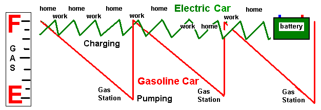
Forget the Gas Tank Model! A Battery is not a Gas tank! We do not run-till-empty and then charge-till-full. That is Gas-Tank thinking. An EV is not a direct replacement for all gasoline cars. An EV is a commuting appliance like a laptop or cell phone. You plug it in at home and at work, or anywhere it sits for long periods... (at home and at work!) In fact, charging-to-full and running-to-empty is not good for long EV battery life. The ideal charging profile is something like charging to 80% and then running down to about 40%. Charging over 8 hours at home and at work on L1 is a great way to do that. In addition, it gives you an afternoon start on yoru errands with a well charged battery.
.

Focus on the Benefits: Instead of focusing on how long it takes to fully fill an EV battery from L1 home charging, we should instead focus on how many miles-per-charge we get during an 8 hour charge at Home and at work. Since any EV will gain about 32 miles of charge during 8 hyours, that can give EV's that charge at work a total daily range of 64 miles - more than a single charge can do in a Volt for example. Also, almost all of the issues and problems we hear about charging infrastructure apply only to L2 charging. L1 has few if any issues and already exists!
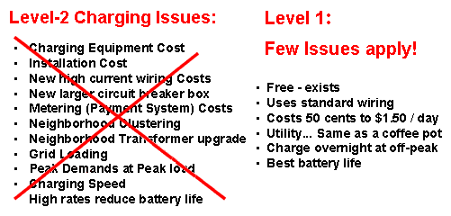
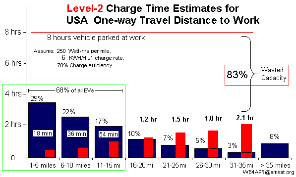 LEVEL-2 QUICK CHARGERS: Quick L2 chargers should be at QUICK places, such as rest stops, minimarts, airport cell-phone waiting areas, kiss-and-ride lots, shoping centers... Places where cars rarely sit for more than 30 minutes to an hour. L2 chargers are cost effecive if used by a lot of cars every hour or so. See the graph at right. Level-2 chargers, however, are NOT cost effective when one car sits in the spot for 8 to 10 hours a day when the car is usually fully charged in the first hour! Level-2 chargers in Daily (8 hour) parking lots are wasting 83% of their capacity by being blocked from other users. Besides, who is going to typically use a public charger when the charging costs are often 3 to 5 times the going rate for electricity? That's like gas cars driving around looking for the opportunity to fill up at $10 to $15 per gallon for gas!
LEVEL-1 CHARGERS AT WORK: Enabling the use of 120v standard outlet Level-1 chargers at work should be the #1 goal of EV Infrastructure roll-out in the USA. As shown at right, installing level-2's is a waste of resources. However, enabling the use of 120v outlet charging (Level-1) can meet the charging needs of 92% of all USA commuters with EV's and still only use 37% of Level-1 charging capacity! As shown here, these 90% of all EV commuters simply plugged into a 120v outlet at work, would leave work fully charged in under 8 hours.
One Million EV's by 2015: If you think 1 Million EV's is a small number, remember, there are over 400 different models of gas cars being sold by 45 manufacturers to meet the broad distribution of public demand for vehicles that match their personal need. Even the #1 selling gasoline vehicle in America only sells to 4% of Americans! By the same token, the EV is not for everyone! On the other hand, if only 1% of drivers bought an EV, that would be 3.5 million EV's! Since 67% of ALL drivers already have an L1 charger port at home (120 VAC outlet), this simple proposal to provide L1 outlets at work would INSTANTLY DOUBLE THE RANGE of every EV in the hands of employees and at NO COST to taxpayers. Even Convenience stores are installing 120v charging outlets.
Existing Outlets are Available: Of course, the number of existing available 120v outlets near parking places is small, but so also are the number of EV cars today. For the President's goal of 1 Million EV's by 2015, that would be about 11 cars at the Naval Academy, yet I counted over two dozen available outlets or power boxes adjacent to parking places (where a $5 outlet could be added) as shown here:
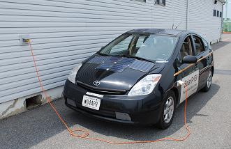
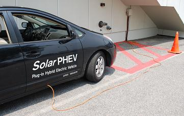
 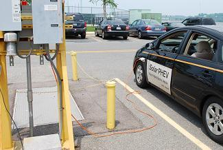
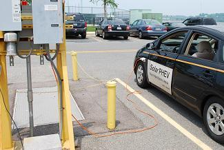


Enabling this Level-1 Pay-in to Plug-in process to use those existing outlets will JUMP-START the acceptance of electric cars. No one is getting free electricity here, the people pay for the placard, and that pays the 50 cents to a dollar a day for the electric bill. (less at government/corporate rates). The only concern might be unsafe practice with the cords as shown in the last photo above and below left.
 . 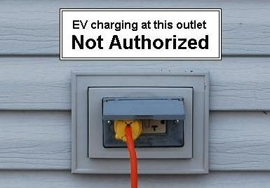
. 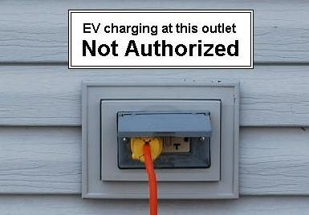

Safety and FOUO: Any concerns over unsafe routing of the charging cord can be easily met by marking any such tempting outlets in unsafe areas with a EV NOT AUTHORIZED label on the outlet as shown above. The Naval Academy already has six 120 V outlets for its official EV's shown to the right and so any safety issues have already been apparently resolved. Of course, the Academy's cost to add these six $5 outlets is rumored to have cost $6000 of appropriated funds, and therefore they cannot be used for charging personal vehicles (see discussion below) and in this case would also need a Employee EV's Not Authorized" sign.
Double the Range: This is truly a no-cost program that will revolutionize the progress towards electrification of transportation and its concomittant environmental and economic benefits by doubling the range of EV's for employees. It can also demonstrate to other large Company facilities the benefits of such an approach on their campuses.
WE CANNOT WAIT FOR OUR DO-NOTHING CONGRESS. We simply must convince Agencies that this No-Cost initiative is fully in keeping with the SPIRIT and ORDER of Federal Executive Order 13514 which orders a clean energy economy and involving Federal employees in achievement of these goals. Specifically, by using low green house gas emitting vehicles, by actively supporting lower-carbon commuting,... and by implementing innovative practices to address green house gas emissions...
Forward Thinking Employees in DOE, GAO, EPA, GSA, DoD, MDOT, Public Works or Parking administration can make their Bosses look great if they could make this happen overnight!
Don't Be MISLEAD! The GAO has determined that appropriated Congressional funds cannot be used by the Federal Government for either the installation of expensive quick-charging stations or to establish a reimbursment procedure for their use by employees. (See ruling). This ruling, however, is a right answer, but to the wrong question. It asked the GAO about the expensive CHARGING STATIONS. The proper question is about allowing employees to Payin-to-Plugin to existing 120v outlets and this simpler question should be revisited by a Progressive Thinking LEADER as soon as possible to get out in front of EV demand and provide leadership to cost-effective development of EV infrastructure. The 120v outlets exist. They can fully charge 92% of all EV commuter's driving ranges. Let's use them!
Send a letter to your congressman, the President, the Governor, the Mayor, your CEO. Write everyone in authority you can think of! The charge is not to explore why it cannot be done, but instead to challenge them to figure out how IT CAN BE DONE.
FOCUS ON THE 120v OUTLETS FIRST! Too many bureaucrats and initiatives are too focused on the expensive Level-2 EV quick charging stations and promoting public EV charging infrastructure as a way to combat Range Anxiety. To see this in perspective, see the lower left 1 million public chargers in this figure compared to the number of 120v outlets already owned by the 205 million Americans that live in single family detached homes. This focus on public charging is doing more to underimine the adoption of EV's than to help them. Range anxiety is a self-fulfilling prophecy if we keep focusing on the need for routine public charging. People who are dependent on public charging SHOULD PROBABLY NOT BE PURCHASING EV's AT THIS TIME. There are 205 Million other Americans that CAN make use of EV's right now with their own home outlets (and at work).
Far More Outlets at Home and Work: By 2015 there will be only about 35,000 Public charging stations by today's estimates, but right now today, there are 205 million charging outlets at home and another 2 million where we work. This is 1800 times more EV charging outlets than there are gas stations now. Two-thirds of all Americans (205 Million) live in single family detached homes with both a parking space and a 120v charging outlet. For cars parked at home for 8 hours overnight most simply do not need ANY new charging infrastructure for these 205 million potential EV drivers. Especially if we can extend the 8 hours charging at home with another 8 hours 120v L1 charging at work!
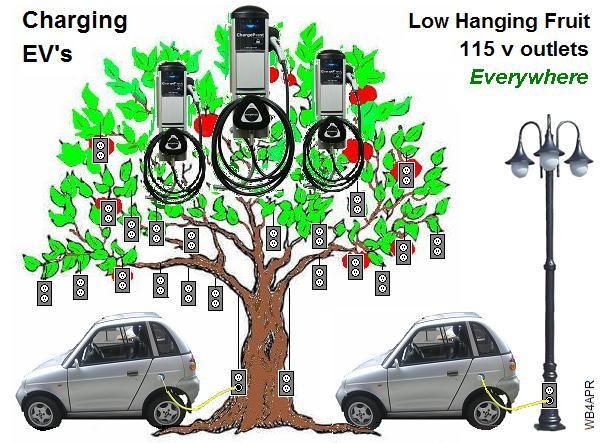 We are too focused on installing Public Chargers if it causes us to ignore the 2 orders of magnitude more 120v charging capabilities that we already have!
LOW HANGING FRUIT: These existing 120v outlets at work are the low hanging fruit. There are plenty of outlets out there already and there are millions of parking light poles which can support an existing 120v outlet for slow Level-1 8 hour charging of EV's while people work. This DOUBLES the range of the EV's for these employees.
The expensive high-cost Level-2 quick charger at work locations and campuses makes little sense for the employee. The workday model for the quick charge commuter is flawed. Employers are not going to want their people doing musical-chairs in the parking lot every hour and rotating one EV off the charging station, and then rotating another one in its place? No. We need 120v convenience outlets on every lamp post and in many cases they already exist. We simply need the means for EV owners to pre-pay for the electricity so that then they get permission to plug in.
Charging Station Blocking: The frustration of EV's parked and blocking a charger long after they are fully charged is the ultimate downside of Level-2 chargers at work. People come to work, and usually do not want to bother changing parking places during the day. They come in the morning and leave 8 hours later. This leaves Level-2 chargers unused 83% of the time. And by definition, it leaves 83% of the other EV owners frustrated! If the Level-1 120v outlet on the lamp pole beside their parking place can charge them in under 8 hours at only a 12 amp draw, this is far less of an impact than the 50 amp charger in one specialized parking place that does it in 1 hours, but only one car at a time and then is blocked until someone comes to move the car!
Maryland Department of Transportation Example: A perfect example is the progressive MDOT corporate headquarters in Hanover Maryland. Their campus displays excellent initiative with two state-of-the-art quick-charging Stations adjacent to the north side of the building. This will meet the expected EV demand in 2011 but with the explosive growth rates of EV's, starting in 2012 and for the next ten years, MDOT will have at least 30 EV commuters. Although these two charging stations show great initiative, there are 3 things that could be considered sub-optimum with this short term approach:
EMPLOYEE AND PARKING LOT CHARGING: Level-1 120v charging is ideal for parking lots and parking garages where cars are expected to spend most of the day in the same spot. They do not need high current fast charging stations but can charge all the cars over simple 15 amp 120v circuits during the day. By placing all the circuit breakers in a central distribution box, the individual parking spots only need a standard 120v GFCI outlet as shown below. By reducing the costs of the garage installation in this manner, large numbers of EV's can be accomodated immediately at very little cost.
SMART GRID NOW! In addition, since most of the cars (90%) can be fully charged in much less than 8 hours, this allows for a form of SMART GRID charging NOW using existing Utility Load-Control boxes just like are currently placed on customer Waterheaters and AC units. Given that a 6 mile commuter only needs a 1 hour charge, and a 12 mile commuter only a 2 hour charge and so on, the 120v L1 charging cords and parking places can be separately marked for 6, 12, 24, and 36 mile commuters. The 36 mile outlets are on all day (9 hours or more). The other outlets are switched on by the utility using their existing Load-Leveling system to control demand and supply. Even without load control, the parking system owner can control load to off-peak charging times using simple timers to achieve any desired load or cost profile throughout the day such as shown here!
.
New L1 EVSE Garage Equipment: Although the above image is a viable plan which could be implemented immediately in any parking garage or lot with a handful of parts from Home Depot, it is not long term viable because the EV owners must leave their own 120v EVSE cord plugged in all day and that is a potential theft risk. The better plan is shown below, where some innovative EVSE manufacturer begins producing an off the shelf system replacing each GFCI outlet with an innexpensive junction box with 3 status LED's and an integrated J-1772 cord.
Payin-to-Plugin SUMMARY: The Level-1 120v outlets exist, or can be installed at minimal cost. Lets go for the low hanging fruit with respect to EV charging and enable the existing 120v outlets scattered around first. Enabling a Payin-to-Plugin system on all campuses can jump-start EV acceptance overnight at no cost.
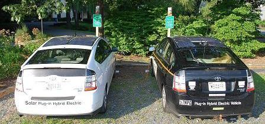
You can also download a condensed one-page(f/b) summary handout of this web page (see top of page).
CHURCHES: After sleeping (8 hours) and Working (8 hours) possibly the next easy charging opportunity is at Church. The Annapolis Friends Meeting added two 120v outlets in the parking lot to extend the range of visitors EV's by 10 miles per Sunday (2 and a half hours charging) as shown to the right. These are simply extensions on the existing parking lot lighting circuit. Members or visitors may use them as needed since the cost is only about 20 cents an hour. See web page.
EV and Gas Vehicle USAGE TAXES: Vehicles have two impacts on the state. They use both the roads and the environment in their daily operation. Currently, Gas cars pay a road-usage fee via the Gas tax, but they do not pay for the environment they are using up. Similiarly, EV's pay a huge environmental benefit, but are not paying the road tax as shown in the graphic below (left). Any consideration of adding a road-use fee to EV's should also end the Free-Ride that Gas cars get with resepect to their usage of the environment. 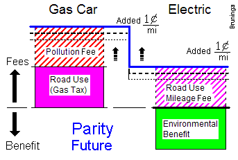 .
Parity Today: For visualization, these charts to the right shows usage/consumption above the line and benefits below. Current impacts are shown solid, and future fees are shown hashed. As shown, both fossil fuel vehicles and EVs have a usage impact on the roads. Gas cars pay a gas tax for the roads but their huge cost in environmental damage is not being collected. Conversely, EV road fees are not currently being collected but EV environmental benefits are real. The pollution cost of the fossil fuel vehicles adds to their usage impact, whereas, the environmental benefits of the EVs shown in green tend to balance out their road load for a net-0 overall cost now. This apparent free ride for a few EVs is accepted now because of their significant benefit in reducing pollution. Considering environmental impacts and road usage costs, then, we can consider a degree of parity between gas and EVs today
Parity Tomorrow: But, as we consider possibly raising usage fees on EVs, to be fair, we need to also raise the pollution fee on fossil fueled vehicles as shown above (right). The solid colors in the figures are currently paid. To maintain parity in the future, the hashed colors need to be paid by both vehicles. As we raise the road fee on the EVs, there must be a comparable and equal rise in the pollution fee on fossil fueled vehicles.
The mechanism for collecting these fees is probably at the MVA. This new usage fee is the same across all vehicles per mile. To maintain parity, those fees from EVs should go to roads and those fees from fossil fuel vehicles should go towards renewable energy and the environment. The gas tax would continue to go towards roads and transportation.
Download a 1 page paper on this tax topic.
Bob Bruninga
IEEE National Committee on Transportation and Aerospace
EV Association of DC
wb4apr at amsat dot org
See also my Solar PHEV, a work in progress...
Disclaimer: This web page is not associated with the US Naval Academy.
This page represents
my off duty professional and avocational involvement with EV's, with the IEEE National
Committee on Transportation and Aerospace and my public comments to the Maryland
EV Infrastructure Committee and other EV venues.